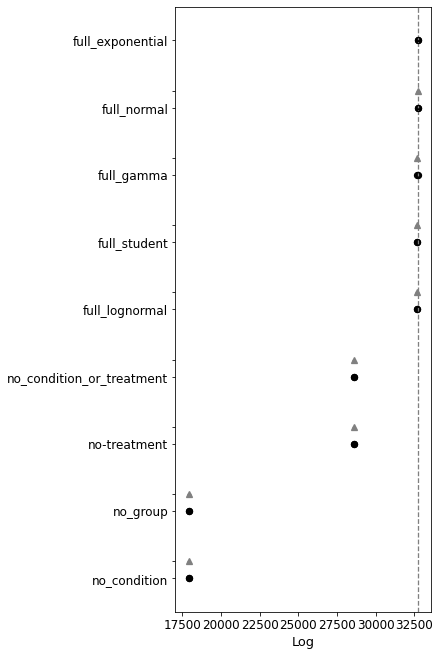

Compare to alternative models¶
from bayes_window.generative_models import generate_fake_spikes
from bayes_window.model_comparison import *
from bayes_window import BayesWindow
---------------------------------------------------------------------------
ModuleNotFoundError Traceback (most recent call last)
/tmp/ipykernel_2492/2249144427.py in <module>
----> 1 from bayes_window.generative_models import generate_fake_spikes
2 from bayes_window.model_comparison import *
3 from bayes_window import BayesWindow
ModuleNotFoundError: No module named 'bayes_window'
df, df_monster, index_cols, firing_rates = generate_fake_spikes(n_trials=140,
n_neurons=10,
n_mice=8,
dur=7,
mouse_response_slope=20,
overall_stim_response_strength=4)
Bayesian¶
window = BayesWindow(df, y='isi', treatment='stim', group='mouse', condition='neuron')
window.fit_slopes(model=models.model_hierarchical, do_mean_over_trials=True,)
window.explore_models()

| rank | loo | p_loo | d_loo | weight | se | dse | warning | loo_scale | |
|---|---|---|---|---|---|---|---|---|---|
| full_exponential | 0 | 32828.062178 | 10.130072 | 0.000000 | 0.215642 | 84.046333 | 0.000000 | False | log |
| full_lognormal | 1 | 32796.773767 | 10.074282 | 31.288412 | 0.213029 | 87.146987 | 120.939881 | False | log |
| full_normal | 2 | 32789.329774 | 10.209585 | 38.732404 | 0.194604 | 85.563650 | 119.631260 | False | log |
| full_gamma | 3 | 32774.758427 | 10.071718 | 53.303751 | 0.198799 | 84.159242 | 118.810871 | False | log |
| full_student | 4 | 32713.285916 | 9.951363 | 114.776262 | 0.178041 | 86.120049 | 120.152971 | False | log |
| no_condition | 5 | 32059.408070 | 3.461760 | 768.654109 | 0.000054 | 81.847853 | 117.245770 | False | log |
| no_group | 6 | 32017.948075 | 3.310025 | 810.114103 | 0.000054 | 82.771409 | 117.612882 | False | log |
| no-treatment | 7 | 28679.234768 | 2.005346 | 4148.827410 | 0.000016 | 74.302598 | 112.083275 | False | log |
| no_condition_or_treatment | 8 | 28642.456469 | 2.039860 | 4185.605709 | 0.000000 | 76.371227 | 113.845165 | False | log |
Simple one-way ANOVA:
window.fit_anova()
isi~stim
sum_sq df F PR(>F)
stim 0.0 1.0 53.8 0.0
Residual 0.0 14.0 NaN NaN
True
Linear mixed effects model¶
window = BayesWindow(df, y='isi', treatment='stim', group='mouse', condition='neuron_x_mouse')
window.fit_lme()
window.posterior
Using formula isi ~ (1|mouse) + stim| neuron_x_mouse__0 + stim|neuron_x_mouse__1 + stim|neuron_x_mouse__2 + stim|neuron_x_mouse__3 + stim|neuron_x_mouse__4 + stim|neuron_x_mouse__5 + stim|neuron_x_mouse__6 + stim|neuron_x_mouse__7 + stim|neuron_x_mouse__8 + stim|neuron_x_mouse__9 + stim|neuron_x_mouse__10 + stim|neuron_x_mouse__11 + stim|neuron_x_mouse__12 + stim|neuron_x_mouse__13 + stim|neuron_x_mouse__14 + stim|neuron_x_mouse__15 + stim|neuron_x_mouse__16 + stim|neuron_x_mouse__17 + stim|neuron_x_mouse__18 + stim|neuron_x_mouse__19 + stim|neuron_x_mouse__20 + stim|neuron_x_mouse__21 + stim|neuron_x_mouse__22 + stim|neuron_x_mouse__23 + stim|neuron_x_mouse__24 + stim|neuron_x_mouse__25 + stim|neuron_x_mouse__26 + stim|neuron_x_mouse__27 + stim|neuron_x_mouse__28 + stim|neuron_x_mouse__29 + stim|neuron_x_mouse__30 + stim|neuron_x_mouse__31 + stim|neuron_x_mouse__32 + stim|neuron_x_mouse__33 + stim|neuron_x_mouse__34 + stim|neuron_x_mouse__35 + stim|neuron_x_mouse__36 + stim|neuron_x_mouse__37 + stim|neuron_x_mouse__38 + stim|neuron_x_mouse__39 + stim|neuron_x_mouse__40 + stim|neuron_x_mouse__41 + stim|neuron_x_mouse__42 + stim|neuron_x_mouse__43 + stim|neuron_x_mouse__44 + stim|neuron_x_mouse__45 + stim|neuron_x_mouse__46 + stim|neuron_x_mouse__47 + stim|neuron_x_mouse__48 + stim|neuron_x_mouse__49 + stim|neuron_x_mouse__50 + stim|neuron_x_mouse__51 + stim|neuron_x_mouse__52 + stim|neuron_x_mouse__53 + stim|neuron_x_mouse__54 + stim|neuron_x_mouse__55 + stim|neuron_x_mouse__56 + stim|neuron_x_mouse__57 + stim|neuron_x_mouse__58 + stim|neuron_x_mouse__59 + stim|neuron_x_mouse__60 + stim|neuron_x_mouse__61 + stim|neuron_x_mouse__62 + stim|neuron_x_mouse__63 + stim|neuron_x_mouse__64 + stim|neuron_x_mouse__65 + stim|neuron_x_mouse__66 + stim|neuron_x_mouse__67 + stim|neuron_x_mouse__68 + stim|neuron_x_mouse__69 + stim|neuron_x_mouse__70 + stim|neuron_x_mouse__71 + stim|neuron_x_mouse__72 + stim|neuron_x_mouse__73 + stim|neuron_x_mouse__74 + stim|neuron_x_mouse__75 + stim|neuron_x_mouse__76 + stim|neuron_x_mouse__77 + stim|neuron_x_mouse__78 + stim|neuron_x_mouse__79
Coef. Std.Err. z P>|z| [0.025 0.975]
Intercept 0.081 0.004 22.318 0.000 0.074 0.088
1 | mouse -0.004 0.001 -4.575 0.000 -0.005 -0.002
stim | neuron_x_mouse__0 -0.002 0.001 -2.720 0.007 -0.004 -0.001
stim | neuron_x_mouse__1 -0.007 0.001 -7.869 0.000 -0.008 -0.005
stim | neuron_x_mouse__2 -0.013 0.001 -15.219 0.000 -0.014 -0.011
... ... ... ... ... ... ...
stim | neuron_x_mouse__76 0.003 0.001 3.290 0.001 0.001 0.004
stim | neuron_x_mouse__77 -0.000 0.001 -0.593 0.553 -0.002 0.001
stim | neuron_x_mouse__78 -0.005 0.001 -5.988 0.000 -0.007 -0.003
stim | neuron_x_mouse__79 -0.007 0.001 -8.630 0.000 -0.009 -0.006
Group Var 0.000 0.002
[83 rows x 6 columns]
window.plot(x='neuron_x_mouse')
Of course in reality, neurons don’t have this consistent variation in each mouse. This would only be applicable to a priori classes of neurons